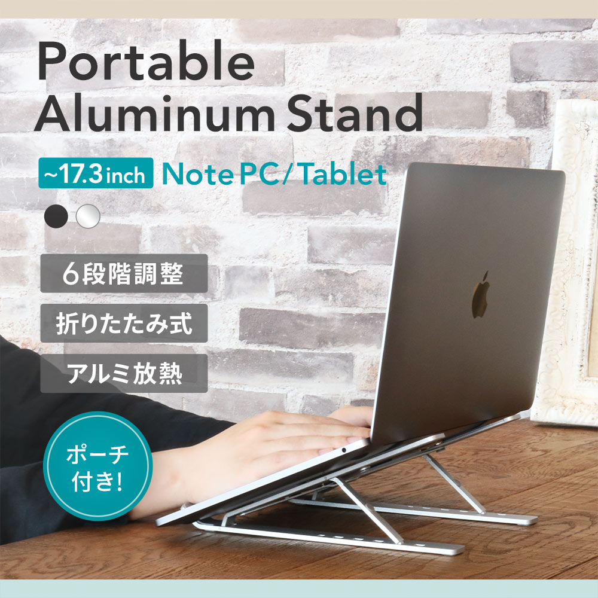
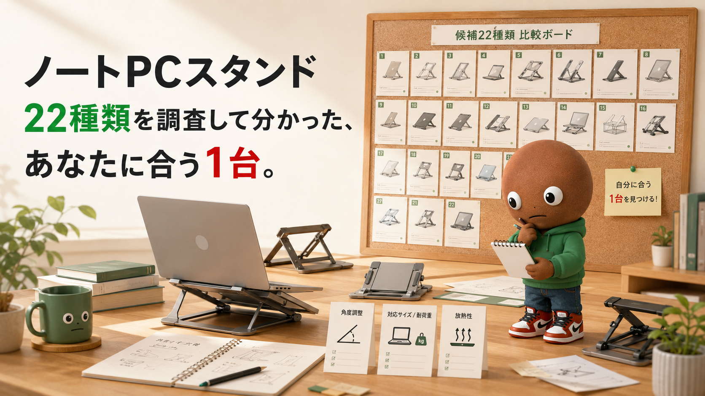
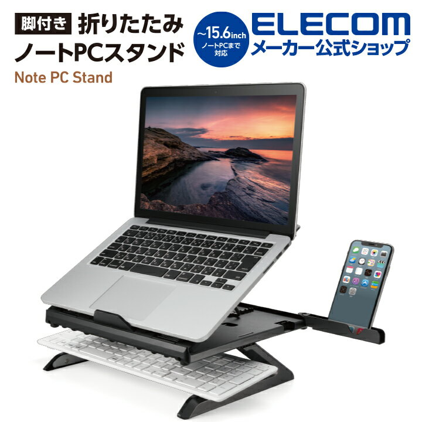
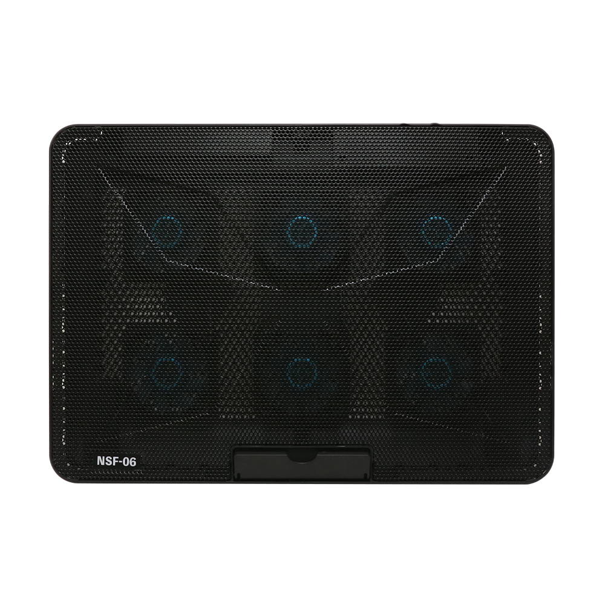
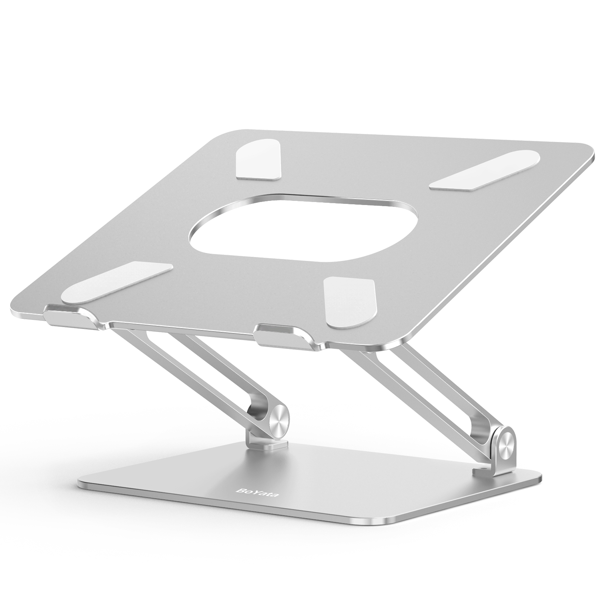
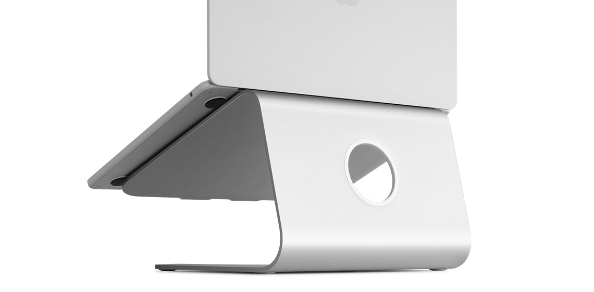
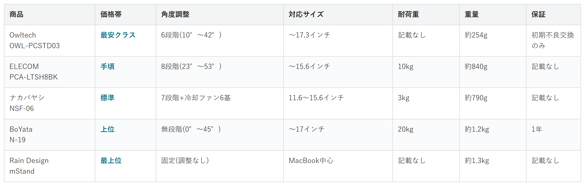

Amazonで見るノートPCだけで作業していて、首や肩が気になる人へ
ノートPCスタンド22種類を調査。価格・角度調整・対応サイズ・耐荷重から、選び方の違う5商品を比較しました。
自分に合うスタンドを探す
この記事はAmazonアソシエイト・プログラムの参加者として、紹介料を得る場合があります（PR）。仕様は調査時点の情報です。
22候補から、選び方の違う5商品に絞りました。まずは気になる1台へ。向いている人・向いていない人と、低評価レビューもまとめています。
あなたの選び方に合う、1台を。

Amazonで見る
Amazonで見る
Amazonで見る
Amazonで見る
Amazonで見る横にスワイプして、5商品を見比べる
調べてわかったのは、基準はシンプルでした。
1つ目は「角度調整の方式」。段階調整か、無段階か、固定かで使い勝手が変わります。
2つ目は「対応サイズと耐荷重」。自分のノートパソコンがきちんと乗るかに直結します。
3つ目は「放熱性」。毎日使うものなので、熱がこもらないかは安心材料になります。

価格帯・角度調整・対応サイズ・耐荷重・重量・保証の比較（価格帯は最安クラス〜最上位の5段階）
選ぶ決め手とにかく手頃に試したいなら、この1台です。
今回の中で一番手頃です。
角度調整は6段階（10度〜42度）です。
対応は17.3インチまで、
重さは約254gです。
保証は初期不良の
交換のみでした。
選ぶ決め手国内メーカーの安心感で選ぶなら、この1台です。
国内大手メーカーの定番モデルで、
5商品の中では安めの価格帯です。
角度調整は8段階（23度〜53度）です。
対応は15.6インチまで、
耐荷重10kgで、
重さは約840gです。
価格.comの評価は
4.67（6件）でした。
選ぶ決め手放熱性を最優先するなら、この1台です。
参考：価格.com レビュー
5商品の中で唯一、
冷却ファンが付いています。
角度調整は7段階（0度〜36度）、
冷却ファンを6基搭載しています。
対応は11.6〜15.6インチ、
耐荷重3kgで、
重さは約790gです。
選ぶ決め手耐荷重の安心感を重視するなら、この1台です。
参考：モノモチ レビュー
耐荷重20kg（記載がある商品の中では最も重い）
角度調整は無段階（0度〜45度）です。
対応は17インチまで、
耐荷重20kgで、
重さは約1.2kgです。
保証は1年でした。
Amazonで見る→選ぶ決め手見た目の高級感を重視するなら、この1台です。
継ぎ目のない
一体成型アルミの高級感が特徴。
角度調整はできません。
継ぎ目のない一体成型の
アルミブロックです。
主にMacBook向けで、
幅265mmまで対応、
重さは約1.3kgです。
角度調整の機構がない分、
シンプルな構造に
なっています。
ノートパソコンだけで作業していると、画面の位置がどうしても低いです。
気づくと首や肩がこっています。
スタンドで少し持ち上げるだけでも、姿勢はかなり変わります。
種類が多くて正直迷います。なので今回、各メーカー公式サイトと価格.comの商品一覧で調査。低評価や評判に疑いのある商品も含めて計22候補から5商品まで絞り込みました。
各商品の実際の低評価レビューも読んだうえで、向いてる人・向いてない人をまとめているので、自分に合ったノートPCスタンドを探してみてください。
今回、各メーカーの公式サイトと価格.comの商品一覧で調査を行いました。調査したのは19候補、この中から5つに絞りました。
ELECOMの360度回転モデルは、特徴的な機能がありますが、価格帯と用途がPCA-LTSH8BKと近いため見送りました。
サンワサプライの残り2機種と、サンワダイレクトの200-STN077も見ました。
PDA-STN89Sと200-STN077は、角度調整できる据え置き型という点で、ELECOMやBoYataと特徴が近いため見送りました。
PDA-STN42BKは逆に、角度調整の段階がなく固定に近いため、他の調整機能付きと比較する軸がずれると判断し見送りました。
サンワサプライのCR-39は、立ったまま使う想定の製品で、座って使う他5商品とは用途がずれるため見送りました。
MOFTは、主力ラインナップの超薄型モデルがノートパソコンの裏に直接貼り付けて使うタイプで、置くだけの他5商品とは使用感が根本的に違うため見送りました。
アイリスオーヤマNPS-Sは、ELECOMと同じ国内メーカー・据え置きアルミという点で特徴が近いため見送りました。
UGREEN、Aovihoは、軽量な折りたたみアルミという点で特徴が近いです。SODIとLOMICALLも同じタイプです。人気を示す情報も紹介記事止まりで一次ソースが弱いため見送りました。
Twelve Southも、Rain Design mStandと角度が固定という点で特徴が近いため見送りました。
キングジムのノッテオンは、公式サイトで販売終了の表示を確認したため除外しました。
Cooler MasterのErgoStand IIIは、国内の日本円価格を確認できず見送りました。
19候補とは別に、信頼性に疑いがある商品もサクラチェッカーで調べました。ノートPCスタンドは、サクラ（やらせ）製品の比率が53%というカテゴリだと、サクラチェッカー自身が紹介しているカテゴリです。
出典付きで確認できたのは3つでした。
CAAKTのアルミ合金製7段階スタンドは、要注意メーカー判定でした。591件の評価のうち、2024年2月だけで430件が減少するという不自然な変動があり、サクラチェッカーは「粗悪品に大量のサクラを使い人気商品に見せかけている可能性が非常に高い」と判定していました。
匠彩（Shousai）のパソコンスタンドはサクラ度3の中程度の注意という判定でした。68件の評価のうち、怪しい日本語評価やサゲ評価が検出されていました。
JBHOOの折りたたみ式アルミ合金スタンドも、要注意メーカー判定でした。公式サイトが存在せず、239件の評価に対して異常な高評価割合が検出されていました。
なお、サクラチェッカーは判定サマリーが中心のページ構成のため、レビュー本文をそのまま引用することはできませんでした。
これで合計22候補を見た上での、5商品の比較になります。
19商品を比較していて、一番驚いたのは価格.comのレビューの薄さでした。
PCスピーカーやモニターアームと違い、専用の満足度ランキングページ自体が無く、個別商品のレビューも2〜6件程度の商品が多かったです。
人気モデルの多くがAmazon専売の海外ブランドで、価格.comに掲載が無いことも分かりました。
低評価商品を調べていた時にも気づきがありました。
サクラチェッカーによると、このカテゴリはサクラ（やらせ）製品の比率が53%という数字が紹介されていました。
レビュー件数が多いからといって安心とは限らないと実感しました。
ここまで読んでもまだ迷ったら、国内大手メーカーの定番モデルであるELECOM PCA-LTSH8BKが、最初の1台におすすめです。
8段階の角度調整で細かく姿勢に合わせられるうえ、価格.comの評価も高く、外しにくい選択です。
Amazonで見る→Q. ノートPCスタンドはどのノートパソコンでも使える？
A. 多くの製品がサイズと耐荷重の範囲内であれば使えます。購入前に自分のノートパソコンのサイズを確認してください。
Q. 角度調整は段階式と無段階式、どちらがいい？
A. 好みが分かれます。無段階式は自由度が高く、段階式は決まった角度で安定しやすい傾向があります。
Q. 冷却ファン付きは必要？
A. 発熱やファン音が気になる人には有効です。そうでなければ、ファン無しの軽量モデルでも十分な場合が多いです。